Method
Overview
Accurate novel view synthesis
ViewNeXt generates novel views that accurately follow target cameras from a few posed images.
Built on video diffusion
Fine-tuned from a pretrained video diffusion model, with about 650 H100 GPU-hours of training.
Views or video, one model
One model generates either sparse novel views or a dense video along a trajectory, trained jointly on both.
Two-stage inference
For a trajectory, ViewNeXt first generates sparse anchor views, then the dense video between them.
Interactive
Generated views in 3D
Drag to rotate · scroll to zoom · click a camera to view its image
Clips in the trailer
FPV trajectories
Outdoor 7
Indoor 8
Videos
Qualitative results
DL3DV 8
dl3dv-10k.github.io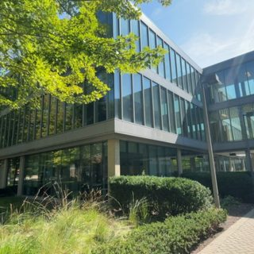
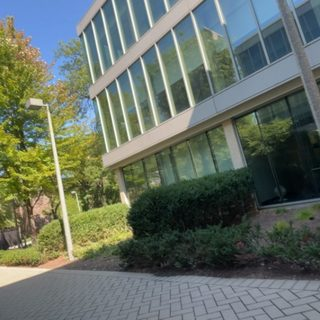
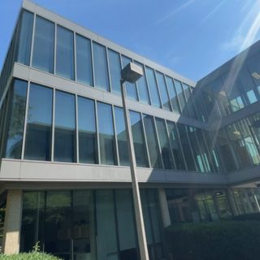
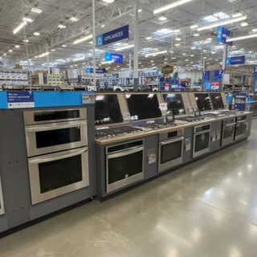
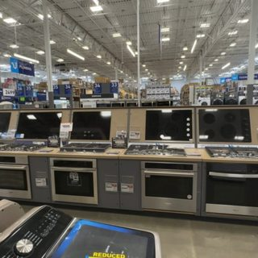
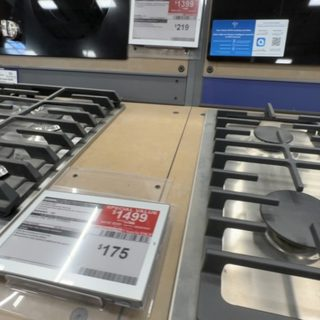
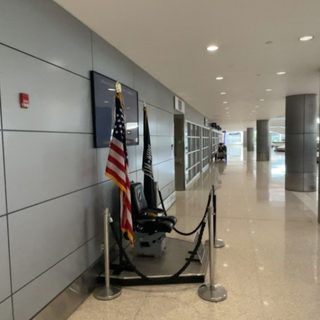
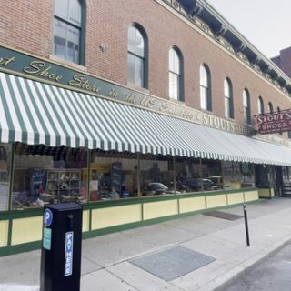
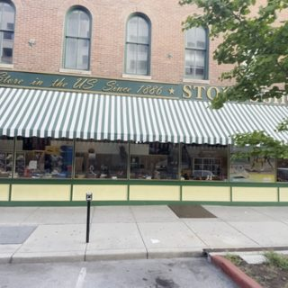
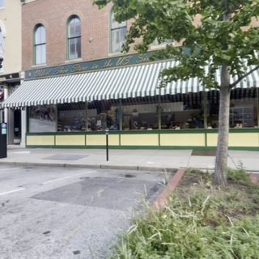
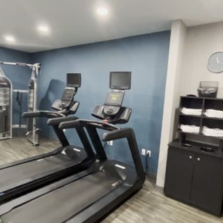
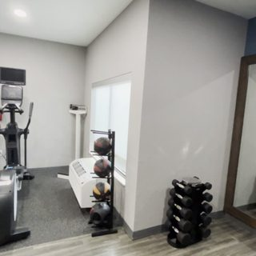
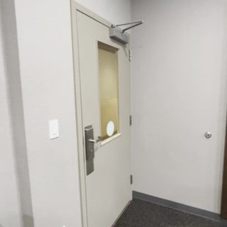
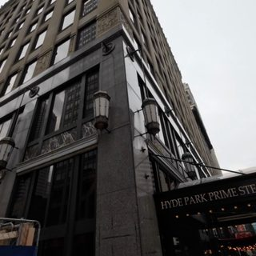
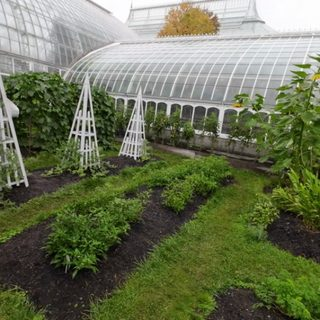
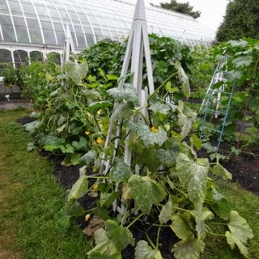
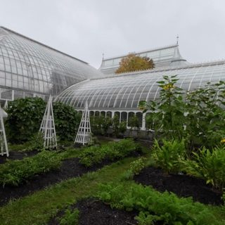
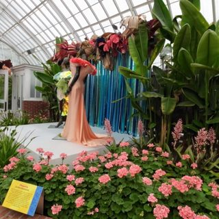
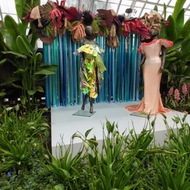
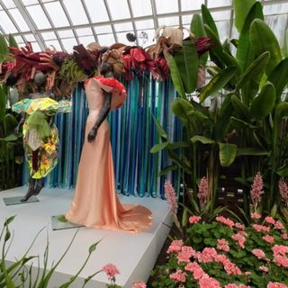
Mip-NeRF 360 2
jonbarron.info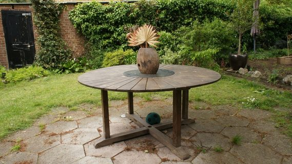
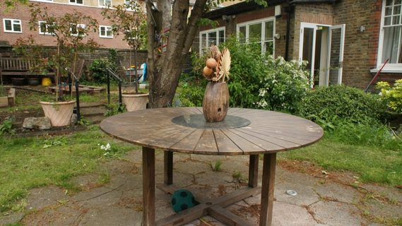
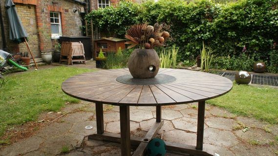
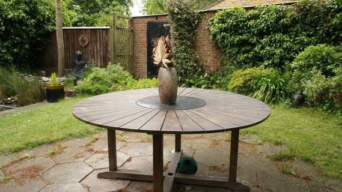
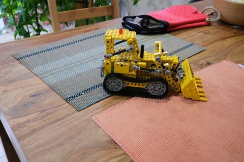
AI-generated images 4
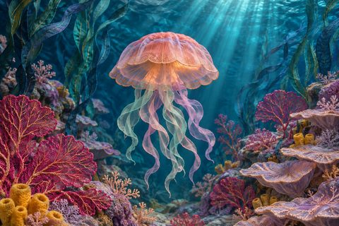
DROID 4
droid-dataset.github.io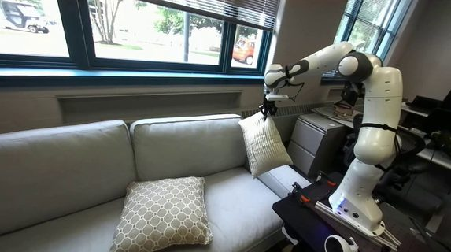
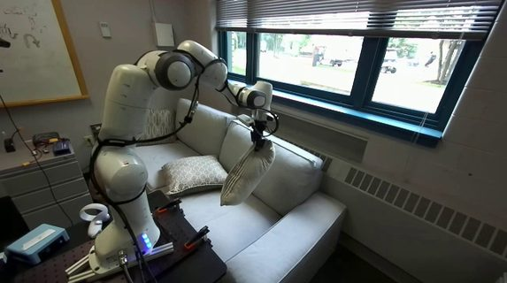
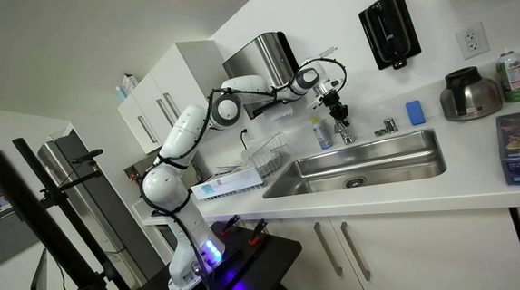
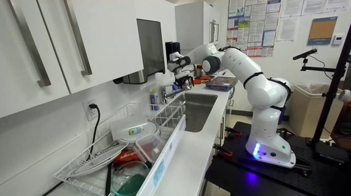
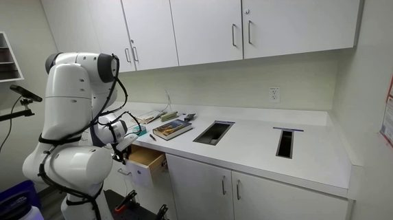
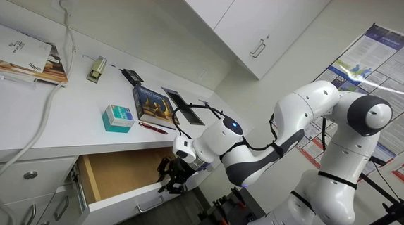
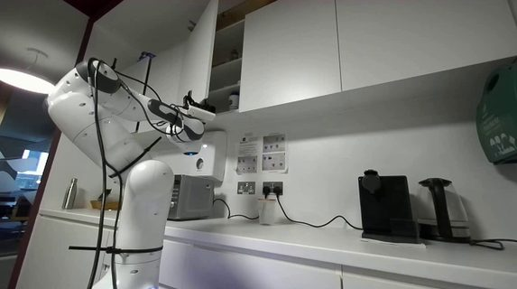
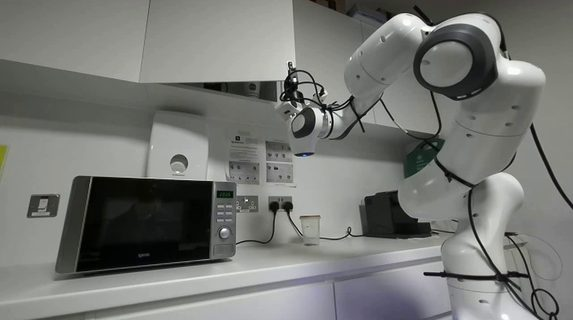
Photos and paintings 4
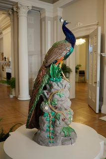
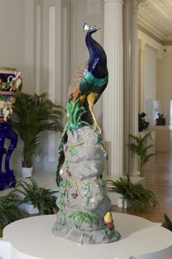
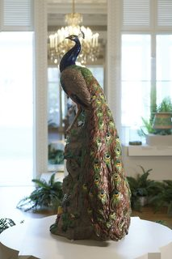
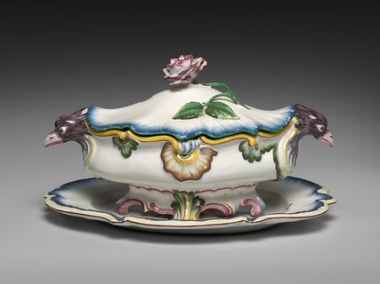
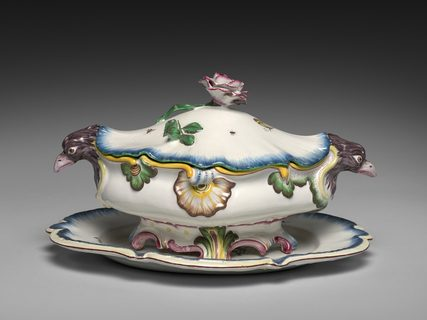
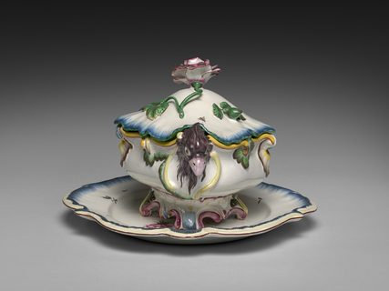
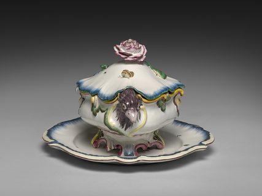
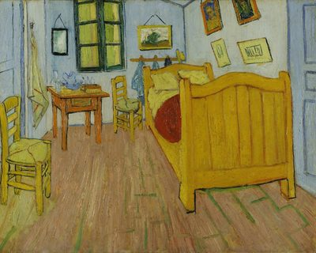
Results
State-of-the-art perceptual quality
** best, * second best.
Sparse views
Mip-NeRF 360 · DL3DV-140
| Method | Mip-NeRF 360 PSNR ↑ | Mip-NeRF 360 LPIPS ↓ | Mip-NeRF 360 DSim ↓ | DL3DV PSNR ↑ | DL3DV LPIPS ↓ | DL3DV DSim ↓ |
|---|---|---|---|---|---|---|
| Regression-based models | ||||||
| LagerNVS | 14.07** | .855 | .763 | 12.74 | .716 | .487 |
| LVSM | 12.58 | .760 | .684 | 13.01 | .666 | .496 |
| YoNoSplat | – | – | – | – | – | – |
| DA3 | 12.19 | .801 | .762 | 12.45 | .766 | .738 |
| Diffusion-based models | ||||||
| SEVA | 12.30 | .581* | .287* | 12.83 | .513* | .234* |
| GeoNVS | 12.45 | .596 | .299 | 13.41** | .537 | .268 |
| MVGenMaster | 12.12 | .635 | .467 | 12.52 | .558 | .316 |
| GEN3C | 12.99* | .630 | .323 | 13.14* | .535 | .278 |
| FrameCrafter | – | – | – | – | – | – |
| VGGT-Diff | – | – | – | – | – | – |
| ViewNeXt | 12.33 | .523** | .192** | 13.02 | .467** | .173** |
| Method | Mip-NeRF 360 PSNR ↑ | Mip-NeRF 360 LPIPS ↓ | Mip-NeRF 360 DSim ↓ | DL3DV PSNR ↑ | DL3DV LPIPS ↓ | DL3DV DSim ↓ |
|---|---|---|---|---|---|---|
| Regression-based models | ||||||
| LagerNVS | 18.15** | .484 | .238 | 18.60** | .420 | .216 |
| LVSM | 14.16 | .649 | .585 | 15.77 | .481 | .330 |
| YoNoSplat | 15.81 | .599 | .334 | 15.90 | .539 | .326 |
| DA3 | 15.55 | .543 | .375 | 16.01 | .446 | .281 |
| Diffusion-based models | ||||||
| SEVA | 15.31 | .406 | .162 | 16.15 | .340 | .125 |
| GeoNVS | 15.05 | .458 | .179 | 15.84 | .399 | .158 |
| MVGenMaster | 15.61 | .401 | .144 | 16.18 | .355 | .133 |
| GEN3C | 14.57 | .537 | .220 | 14.82 | .467 | .220 |
| FrameCrafter | 14.01 | .474 | .165 | 14.73† | .351† | .129† |
| VGGT-Diff | 15.71 | .365* | .115* | 16.79 | .285* | .094* |
| ViewNeXt | 16.36* | .298** | .087** | 17.10* | .259** | .075** |
| Method | Mip-NeRF 360 PSNR ↑ | Mip-NeRF 360 LPIPS ↓ | Mip-NeRF 360 DSim ↓ | DL3DV PSNR ↑ | DL3DV LPIPS ↓ | DL3DV DSim ↓ |
|---|---|---|---|---|---|---|
| Regression-based models | ||||||
| LagerNVS | 19.57** | .412 | .175 | 20.27** | .332 | .140 |
| LVSM | 15.17 | .612 | .592 | 17.27 | .397 | .265 |
| YoNoSplat | 16.94 | .521 | .229 | 17.94 | .436 | .220 |
| DA3 | 17.28 | .443 | .257 | 18.12 | .337 | .180 |
| Diffusion-based models | ||||||
| SEVA | 16.54 | .344 | .121 | 18.31 | .254 | .081 |
| GeoNVS | 16.03 | .407 | .138 | 17.60 | .320 | .110 |
| MVGenMaster | 16.78 | .357 | .115 | 17.81 | .291 | .095 |
| GEN3C | 15.59 | .435 | .156 | 16.80 | .345 | .126 |
| FrameCrafter | 15.54 | .362 | .110 | 17.18† | .223† | .066† |
| VGGT-Diff | 17.31 | .281* | .079* | 19.28† | .198†* | .054†* |
| ViewNeXt | 18.17* | .234** | .064** | 19.48* | .178** | .045** |
–: the method does not support this number of inputs. †: numbers reported by the original authors.
Camera trajectories
DL3DV · Tanks and Temples
| Method | PSNR ↑ | LPIPS ↓ | DSim ↓ | TSED ↑ | tOF ↓ | APER ↓ | APEt ↓ |
|---|---|---|---|---|---|---|---|
| Regression-based models | |||||||
| LagerNVS | 17.99** | .454 | .225 | .818 | 4.78 | 3.82 | 1.34 |
| LVSM | 15.79 | .471 | .291 | .669 | 6.89 | 14.66 | 3.64 |
| YoNoSplat | 15.37 | .567 | .319 | .885 | 6.28 | 10.80 | 1.94 |
| DA3 | 15.96 | .468 | .261 | .954 | 3.17 | 2.98 | 0.79* |
| DepthSplat | 15.86 | .412 | .217 | .986** | 2.61 | 2.73* | 0.72** |
| Video diffusion models | |||||||
| ViewCrafter | 12.68 | .539 | .326 | .551 | 6.16 | 23.81 | 3.71 |
| GEN3C | 13.72 | .458 | .206 | .864 | 4.63 | 17.53 | 3.03 |
| AnyRecon | 16.43 | .316 | .119 | .926 | 2.95 | 6.27 | 1.18 |
| FixAnything | 13.56 | .540 | .318 | .698 | 6.68 | 11.03 | 3.17 |
| VGGT-Diff | 16.89 | .275 | .081 | .873 | 3.30 | 5.30 | 1.25 |
| RoGe | 17.94* | .281 | .087 | .918 | 2.66 | 6.36 | 1.35 |
| ViewNeXt · views | 16.69 | .258* | .079* | .969* | 2.40** | 2.57** | 0.81 |
| ViewNeXt · video | 16.66 | .256** | .078** | .949 | 2.55* | 2.79 | 0.72** |
| Method | PSNR ↑ | LPIPS ↓ | DSim ↓ | TSED ↑ | tOF ↓ | APER ↓ | APEt ↓ |
|---|---|---|---|---|---|---|---|
| Regression-based models | |||||||
| LagerNVS | 15.50** | .573 | .358 | .150 | 17.2 | 19.11 | 3.96 |
| LVSM | 11.90 | .638 | .536 | .161 | 49.8 | 20.72 | 7.87 |
| YoNoSplat | 12.14 | .716 | .565 | .292 | 30.9 | 68.31 | 6.79 |
| DA3 | 12.75 | .631 | .453 | .459 | 20.1 | 5.10 | 1.16 |
| DepthSplat | 12.47 | .558 | .315 | .749** | 17.9 | 27.11 | 3.30 |
| Video diffusion models | |||||||
| ViewCrafter | 10.03 | .620 | .445 | .023 | 52.7 | 36.40 | 8.19 |
| GEN3C | 11.80 | .586 | .313 | .402 | 20.2 | 12.66 | 3.09 |
| AnyRecon | 14.52* | .424 | .157 | .399 | 13.2 | 4.03 | 1.11 |
| FixAnything | 11.15 | .661 | .482 | .027 | 39.3 | 57.06 | 7.77 |
| VGGT-Diff | 13.87 | .424 | .137 | .339 | 15.2 | 2.83 | 1.06 |
| RoGe | 14.39 | .411 | .152 | .364 | 17.8 | 2.91 | 1.30 |
| ViewNeXt · views | 13.39 | .392* | .134* | .696* | 9.4* | 2.29* | 0.56* |
| ViewNeXt · video | 13.54 | .385** | .129** | .636 | 7.7** | 1.76** | 0.54** |
Both ViewNeXt variants first generate sparse anchor views; views then synthesizes the remaining frames individually, while video synthesizes video clips between the anchors. TSED and tOF measure temporal consistency; APER and APEt are the rotation (°) and translation (% of trajectory length) errors.
Citation
BibTeX
@misc{zhang2026diffusion,
title = {Diffusion-Based View Synthesis Revisited},
author = {Zhang, Jian and Liu, Bangya and Chen, Nuo and Wang, Hao and Bei, Sisong and
Gong, Xinyu and Wetzstein, Gordon and Wang, Yipeng and Fan, Zhiwen},
year = {2026},
url = {https://github.com/phai-lab/ViewNext}
}